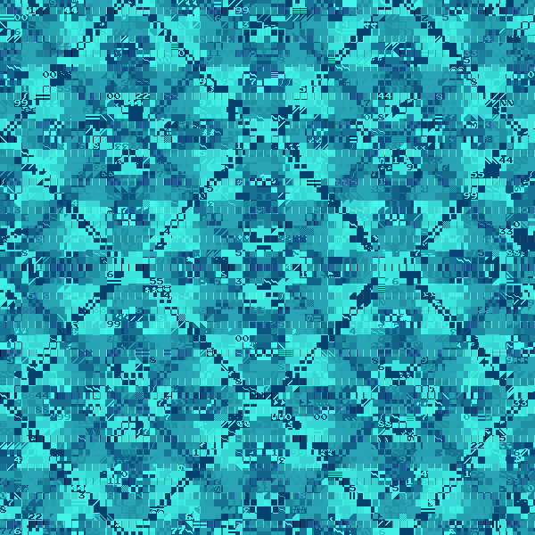
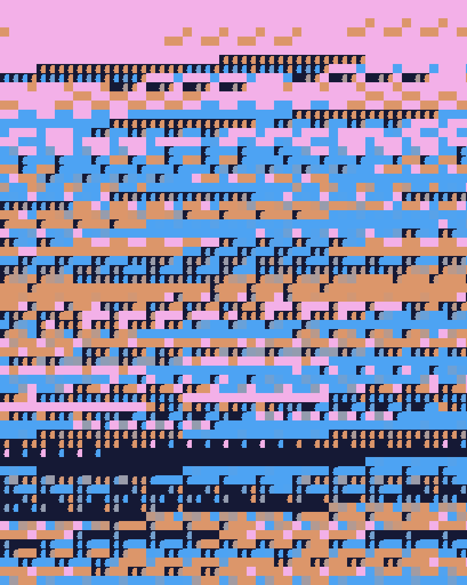

2026年9月30日
別に何ともないよと思っていても、それなりに憂鬱を感じることがある。自分の場合、こういう時はだいたい男女論を攻撃している。だがこれは、分かりやすいものを攻撃してしまってるだけだ。
本当は頭の何かで何かを果てしなく恨んでるんだろうけど、何を打倒すればいいのかもわからない。明日通院した時に話した方がいいのかどうなのか。鬱症状の一種なのかどうなのか判断がつかない。特段診断も出ていないし。
結構虚しさが出ている。要するに、「まともな価値基準なんか誰一人持ってないくせになぜ義務や推奨といった様相が発生するのか、なぜ理性なんてものを人間に仮定するのか、なぜ同意もしてない社会契約や風潮に自分は巻き込まれているのか」という怒りがあるのだと思う。
スーパーマリオブラザーズ：マリオはなぜ壁をすり抜ける？マイナスワールドへ続く裏技を仕組み。ファミコン【レトロゲーム技術分析】
YouTube
通常の領域をはみ出して、スプライトのグラフィック上までカウンタが回っていくのってちょっとおもろいと思う。文字とかじゃなくなる感じが。
ざっくり、
- 添字の連続化に興味がある。陰計算で添字を指数に戻して分数階微分したらどうか？
- 陰計算だけでなく一般の数式の連続化を考えるなら母関数。
- 添字に実数とか複素数とか二重数とかp-進数とか色々代入することも出来るかも？
- 添字に位相空間とか入るの？ 代入そのものを表す普遍性は？ → 指数対象っぽい。フィボナッチ数列に位相空間を代入とかしてみたいよね
- 一般に、拡張をするための手法があると嬉しいよね
- Kan-拡張？ でも、情報が足りないかも？
- 豊穣圏？
- 添字 i ∈ I に対して余積（直和）を取ると、I×Aになる（＝和から積構造が出る）より一般にはcopower
- p-進対象は？ → 逆系・射影極限を取る操作
- 『複素対象』みたいなのはあるのか？ → 概複素構造+可積分性
- 「一点特異空点が作りづらい + あるzで特異空間になる部分でもwで解析的だと一致の定理でローラン展開が伸びるため却って計算しづらい」などの現象（Hartogs現象）が起きるのが多変数複素解析で、穴の構造（積分経路もそうかも）をコホモロジーで調べる
- 穴を調べるのがホモロジー、穴から実数を返す汎関数がコホモロジー、そして微分形式からコホモロジーが作れるらしい？（二回を取ると0になるところとかも）
- 微分方程式の解けない部分が穴としてコホモロジーとして現れるということがあるらしい
-
接空間……の一部の、指定した部分空間分布Dからリー括弧がはみ出ない、というのがざっくり可積分性の意味？
みたいな話をChatGPTとした。わかったからと言っても何にもならないのだけど、それでも変な計算とか出来るのはちょっと楽しい。
2026年9月27日
トップ絵を置き換えたりしたりしました。休日は仕事したりしてました。牛丼食べたりネパールカレー食べたりしてました。
数学：ファイバー積のこと
ファイバー積は写像f,gと同値関係と空間X,Y,Zから導かれる積で、空間Zが一点の時、単なる積と一致するらしい。$$ X\overset{f}\longrightarrow Z\overset{g}\longleftarrow Y$$がある時、$$X \times_Z Y = \lbrace(x,y)\in X \times Y \mid f(x) = g(y) \rbrace$$を作る。例えば数も入れられる。有限集合として$$X=\{1,2,3\},~~Y=\{4,5,6,7\},~~Z=\{0,1\}$$を考えて、各写像を$$f(x)=x\bmod 2,~~~~g(y)=y\bmod2$$とすると、ファイバー積は$$X\times_Z Y= \{(x,y)\mid x \equiv y \bmod 2\}$$となる。つまり、xとyが法を2として合同となる組み合わせを選出することになるので、$$(1,5),~(1,7)~,(2,4)~,(2,6)~,(3,5)~,(3,7)$$が残る。
一般に、有限集合のファイバー積の要素数は$$|X \times_Z Y| = \sum_{z\in Z}|f^{-1}(z)||g^{-1}(z)|.$$となるらしい。先程の例で検算すると、$$f^{-1}(0) =
\{2\},~~f^{-1}(1)=\{1,3\}$$よって \(f^{-1}\)
については、$$|f^{-1}(0)|=1,~~|f^{-1}(1)|=2$$となり一方、$$g^{-1}(0)=\{4,6\},~~g^{-1}(1)=\{5,7\}$$よって \(g^{-1}\)
については、$$|g^{-1}(0)|=2,~~|g^{-1}(1)|=2$$となる。（注：ちゃんと \(Z\) の逆像から考えること。最初、ファイバー積後の空間から考えてよくわからなくなった）
偶数側 \(z=0\)
では、\(1\times2 = 2\)、すなわち\((2,4),~(2,6)\) が出来る。奇数側 \(z=1\) では、\(2\times2 = 4\)、すなわち\((1,5),~(1,7),~(3,5),~(3,7)\)
が出来る。したがって、計6個。
もちろん写像は自由に変えることが出来て、例えば$$\mathbb Z \xrightarrow{\,a\mapsto a^2\bmod n\,} \mathbb Z/n\mathbb Z \xleftarrow{\,b\mapsto b^3\bmod n\,} \mathbb Z $$とすると、$$\mathbb Z\times_{\mathbb Z/n\mathbb Z}\mathbb Z = \{(a,b):a^2\equiv b^3\pmod n\}. $$となり、合同方程式の解集合となる。
もしも \(Z\) が一点なら、条件 \(f(x) = g(y)\) は自動的なので、通常の掛け算になる。（つまり終対象 \(1\) の上の引き戻しは通常の直積になる……）
2026年9月26日
頭痛が強かった。結局今週は3錠飲んだ。
微分 ----> 変分
| |
| |
| |
v v
差分 ----> ？？？ということを思いついたところ、離散変分というものがあるらしい。数列に対して使えるとか。なるほどね……？
とか、ずんだもんの定理【数学解説】氏の 【ベルヌーイ数】累乗のようなもの【陰計算】 を見てて、それはなんだ！？ となり、添え字とか変分とかファイバー積とか、気になることがだいぶ増えてきた。が仕事が多くてシット。
空想
何かのテロリズムによってヴェブレン階層に概念的航空機が命中、層崩壊を起こして超限階層から雪崩を打って崩れてきて自然数まで落ちてきていずれ数学が壊れることが予想されているのだが、とにかく階数が大きいので人類の生きる有限時間内にそれが届くかどうかまだわからない……みたいなSFを考えた。
証明論的順序数が次々使用不能になって、算術階層しか使えなくなったりする。集合論方面との通信が途絶し、人類数学圏は算術階層（\(\Sigma^0_1, \Pi^0_1, \Sigma^0_2, \Pi^0_2, \cdots\)）を中心に防衛戦を構築、
「\(\Sigma^0_{17}\) が陥落」
「総員 \(\Pi^0_{16}\) へ退避せよ」
みたいな……（←まず数学に詳しくなってから書け）
「超限崩壊の推定到達時間は\(1.73\times10^84\)
年後」
「じゃあ大丈夫じゃん」
「前回予測は現在使用不能となった超限帰納法に依存していました。現在利用可能な体系では、崩壊前線が単調に下降していることを証明できません。というより、『前線』という単一の対象として記述することが難しくなりつつあります」
みたいな。で、身体的な手続きとして無限を保存したりしてなんとか復活したり……。
もうちょっと細かくヴェブレン階層についての実験と覚書
通常のヴェブレン階層については省きつつ、超現実数においては、順序数 \(\omega\) に対応するものとして、$$\omega = \lbrace0,1,2,\cdots\mid\rbrace$$というものがあり、そこからデクリメントをすると、$$\omega-1 = \lbrace 0, 1, 2, \cdots \mid \omega\rbrace$$$$\omega-2 = \lbrace 0, 1, 2, \cdots \mid \omega, \omega-1\rbrace$$という風になっていく。左手と右手のせめぎ合いになっていて、左手はとにかくどこまで下から抑えられるか、右手はとにかくどこまで上から抑えられるか、それで二分木を形成するという感覚が近い。このままどんどこ減らすと、$$\dfrac{\omega}{2}=\lbrace0,1,2,\cdots\mid\omega,\omega-1,\omega-2,\cdots\rbrace$$$$\dfrac{\omega}{4}=\lbrace0,1,2,\cdots\mid\omega,\omega-1,\omega-2,\cdots,\dfrac{\omega}{2},\dfrac{\omega}{2}-1,\dfrac{\omega}{2}-2,\cdots\rbrace\rbrace$$$$\omega^{\frac{1}{2}} = \lbrace0,1,2,\cdots\mid\omega,\dfrac{\omega}{2},\dfrac{\omega}{4},\cdots\rbrace$$という風になっていくというのがいわゆるConwayのω-mapというもので、ここでヴェブレン階層の0階が$$\omega^\alpha = \Phi(0, \alpha)$$というものだったことを思い出すと、$$\omega^{\frac{1}{2}} = \Phi(0,1/2)$$と考えることが出来るよね、つまり、「超現実数における各変数は、いずれも超現実数それ自体を再演するのではないか」という仮定から入った。シーケンスっぽく書くと$$\omega^{+-} = \Phi(0,+-)$$みたいなこと、そして$$\Phi(1,0) = \Phi(0, \Phi(1,0)) $$$$\Phi(2,0) = \Phi(1, \Phi(2,0))$$なのだから$$\Phi(1/2,0) = \Phi(1, -\Phi(2,0))$$なのではないか、みたいなこと……。
その着想をChatGPTに依頼してLeanを実験してもらい、今のところ第一変数にω日目の数（任意の正の有理数）を入れても破綻が起きない『らしい』、というところまでは話をしてきた。
\(\Phi(1/3, 1)\) は「あることはわかった、だがこの記号の意味がオヌシにわかるかぁ～？（by ChatGPT）」という感じになってきた（地力不足を感じて悲しい）。どうも、$$\Phi(1/3, 1) = \Phi(1, 何か_1) = \Phi(1, -\Phi(2, 何か_2)) = \cdots$$という感じで、各 \(\cdots\) 部分で座標変換しながら伸びてくことになるようなのだが、それの同定がなかなか難しいみたい。実際、1→何か1の部分で、正負の時点で入れ替わってるし……。あと、$$\Phi(1,\Phi(3,0)) = \Phi(2, \Phi(3,0))$$なので、そもそも \(\neg\forall \in \text{No}~~[\Phi(1, x) = \Phi(2, x)]\) ではある。要するに不動点で各階層の像がぶつかるので、第一変数を上げれば単純に「値域全体が上へ移動する」と考えるのはちょっと違うんですよね。
2026年9月24日
なんかしばらく書かなかった。
連休中に、札幌の円山動物園に行ってきた。何気に久しぶりかも。語学に関心を持って以来では初めて訪れたので、学名を見ながらChatGPTに質問するという見方が増えており、楽しかった。今度は植物園もいいかも。
帰りにステラプレイス内の鼎泰豐に寄ってきた。結構したけど、すごくおいしかった……。
片頭痛薬はだいたい週2くらいで飲んでいる。10錠あるので、通院は一か月に一回くらいでいいのではないか。
「悪人はその人で大変なんだから憐れむだけにしてほっとけ」という話を聞いたのだけど、すると「善悪が曖昧な場面でこそ出張らねばならぬ」ということになり、確かにそれはそうなのかも。
せっかく日記を書いてるので、月に一度くらい、時事についてまとめた方がいいと思う。
2026年8月26日 ネパールと中国の国境で土石流が発生、大被害。
原因となった地質学的事象は、ヒマラヤ山脈のランタン・リルン山で発生した氷河崩壊と考えられており、世界各地の地震計でMs 5.2に達する揺れが観測された - Wikipedia
2026年9月18日 トランプ大統領がメディア3社をホワイトハウスから排除
9月18日、ドナルド・トランプ米大統領がCNN、ポリティコ、MS NOWの主要3メディアに対しホワイトハウスへの取材アクセスを即時停止すると通告 - JBPress
2026年9月22日 台風25号が千葉を直撃、印旛沼の堤防が決壊。
千葉県河川環境課などは22日、台風25号により、印旛沼の北沼の堤防（成田市）の一部が破堤したと発表した。周辺の田んぼが広範囲に浸水しているという。同日午前4時半時点の水位は基準点から5.04メートルで、1968年度の管理開始以来最大となった。 - 朝日新聞
SNSのあれこれ（特に男女論）について書こうかと思ったのだけど、嫌になったのでやめた。
そうそう、そういえば シジジーズの新譜の「Chi Kyuu」が出ている 。聞きたい。冷水ひとみさんご本人による曲目解説も 。
肩肘はらずに、少し込み入ったこと（数学とか音楽とか……）について考えをまとめられたらいいと思うのだけど、日記には相応しくないと思う。勉強しなくちゃいけないことも多い。
「AIがあるとやる気が出ない」という人も多いと思うけど、自分はどんどん教師にしたい。専門家に質問したとして、その答えの正解率は100%に限りなく近いのかもしれないが、自分が話しかけるとしてピントの外れた質問をし続けて辟易させることが目に見えている。それよりは、AIがときおり間違うとしても少なくとも自分より正答率が高いのだから（ｗ、気になることはどんどん聞いてしまえと思っている。
2026年9月15日
冷え込んできた。養母がストーブを使えないといけないので、ストーブ前の粗大なゴミ類を処理施設に持ち込む。途中、サジェストされて気になっていたスマナサーラ長老の動画を見てみて、少し興味を持つ。
CodexにLeanを使ってもらって、超現実数について進める。もしかしたら \(\Phi(1/3, 1)\) みたいなところまで進めるかもしれない。ほんとに！？ しかし今月20日までの利用可能トークンを使い切ってしまった。頑張っていただいてます……。
頭痛と眠気のため、土日はほとんど起き上がることが出来ず。結局日曜の深夜になって起き始めて、売りたい本に未練が残らないように必要なぶんを読んだり撮影したりして、30冊くらいは判断した。Kindleで買い戻せるものもいっぱいあると思うし、それでいいと思う。 実家にある父の村上春樹の初版本についても最初は文庫本だけ持って帰ってきて読もうかと考えていたけど、あまり気が進まないだろうと予測できるのでこの際一旦綺麗に処分してしまうことに心を決めた。読みたい人の手に渡って本として在ってくれれば、というのがいい落ち着きどころだろう。
その他のきっかけもあり、昨日、頭痛外来に行ってみることにした。子供時代からずっとある頭痛について話すと、片頭痛にまず間違いないとのことで、一応MRIをした上で判断いただき、薬と頭痛手帳をいただく。早速一錠使うと（本格的に痛くなり始めてからの服用だと、効き目が薄いらしい）、だいぶ頭が軽くなった感じがした。
片頭痛、一回だけ雪の照り返しがすごい時に路上でスマホを使って閃輝暗点が出たことくらいはあったけど、どうも吐いたり寝込んだりというイメージが強かったので、まさか自分がそれだとはちょっと意外な……。まあ血縁にも片頭痛とかメニエール持ちとか多いし。もっと早く行けば良かったかもしれない。
（法話を聞いたのもあってか）だいぶ落ち着いてきたし、精神科は次は大丈夫かもしれない。予約の日に行って、話して、一旦止めてもらうかな。
古代語やったり完全列やったりしたい気持ち。
2026年9月9日
生活
精神科に行ってきて睡眠薬を貰った。これは入眠がすごい。ただ起き掛け、口が超絶苦いｗ
相続税について税理士さんに相談したり、実家の書類のシュレッダーがけを呼んだり。それと仕事が大量に来ている。忙しいが今しばらく頑張る。
財産分与と家の片づけまで済めば、それ以降のことはもう流れに任せてしまいたいと思う。あるべき地点に収まったら、それから自分の出来ることをしてあげればいい。
Codex遊び
ヴェブレン階層は超現実数まで拡張できるのか？ イメージは、
\(\Phi(\dfrac{1}{2}, 0) = \Phi(1, -\Phi(2,0)) = \epsilon_{-\zeta_0}\)
\(\Phi(\dfrac{1}{4}, 0) = \Phi(1, -\Phi(3,0)) = \epsilon_{-\eta_0}\)
\(\Phi(\dfrac{3}{4},0) = \Phi(1, -\Phi(2, -\Phi(3,0))) = \epsilon_{-{\zeta_{-\eta_0}}}\)
のように、0から始まる超現実数みたいに、二分木をポキポキ進んでいくイメージ。\(\Phi(2, 0) = \Phi(1, \Phi(2,0))\) なので結構うまく行ってるのではないかと思うんだけど……（というか上のような記法を導入しないと対応する超現実数の表記がないような気がする）
これについては巨大数wikiとかコンウェイの本とか読んでた15年前くらいから気になっていて、せっかくなのでCodex氏にLeanを頑張ってもらっている。Leanについては自分でも勉強してみたいけれど、まあじっくりと。
語学
Sound Horizonの5thアルバム『Roman』に出てきたフランス語についてラテン語系語源から考えていた。
- ← 廻るよ廻る…死神の回転盤 →
- 考えるきっかけになった下り。この前の部分もルーレットの『目』にちなんだ動詞で畳みかける、すごくかっこいい部分。
- dieu m. は ラテン語 deus m. から来ている。フランス語では小文字で dieu なら「神」、複数形もあって dieux で「神々」。大文字で Dieu と書くとキリスト教・ユダヤ教などの唯一神のことを言うとか。（教会ラテン語でも in principio creavit Deus caelum et terram みたいに大文字にする）
- 廻る回る緋色の風車Moulin
rouge 綺麗な花を咲かせて
- moulin m.（風車、水車）は、後期ラテン語 molīnum n.（製粉所、水車）、ラテン語 molō（挽く）や mola f.（石臼）、古代ギリシャ語 μύλη f. （製粉所、石臼…）、英語 meal
と関連。
- mola から文法性が入れ替わってるな……と思ったけど、molīnum を挟んで中性名詞化した→フランス語ではラテン語の中性が消滅した＋単数形がラテン語男性名詞と似た振る舞いをしていたため男性側に吸収された、という流れだとか。
- 日本語で言えば、『この語は語尾がア段だから、この助詞・活用・連体の形と相性がいい』くらいの気持ちなんだろうなあ。
- ラテン語、第二変化名詞複数形主格が -a で第一変化名詞単数主格と同じになるのは意地悪でしょ、と思っていたのだが、ラテン語 folium n.（落ち葉）の複数形 folia n.pl. が、イタリア語では foglia .f と女性名詞になるということがあるようなので、恐らく木の葉は順次雌雄同体なのだろう。
- rouge は rubeus, -a, -um と関連。
- ちなみにワインの「ロゼ」は薔薇 rosa f. から。
- moulin m.（風車、水車）は、後期ラテン語 molīnum n.（製粉所、水車）、ラテン語 molō（挽く）や mola f.（石臼）、古代ギリシャ語 μύλη f. （製粉所、石臼…）、英語 meal
と関連。
- 泣き叫ぶ《狂乱の調べ》 焼けた《屍肉の風味
》
- 『少年は剣を…』では『泣き叫ぶ《狂乱の調べ》焼けた《屍肉 の風味》』と歌われていたので、アルバムで聞いて「うおぉなんか歌詞が違う！！」と謎にテンションが爆上げになった。
- saveur f. はラテン語 sapor m.（味、風味）、sapiō（味がする、味わう、識別する） が関連が深く、『物事を味わい分ける→判断力がある→賢い』という流れがあるらしい。現在分詞にすれば sapiēns 、サピエンス。
- 日本語でも経験値を表す言葉として『酸いも甘いも嚙み分ける』というのがあるよね
2026年9月6日
直和と直積ってどう違うのかなと思っていたのだけど、有限の範囲では差はないらしい。無限直和は非零な元は有限個に限られ、無限直積はそうでなくてもよいらしい。
無限直積 \({\displaystyle\prod_{i\in I}A_i}\) からは各成分へ向かう射影 \(\pi_i : {\displaystyle\prod_{j\in I}} A_j \to A_i\) があり、任意の対象 \(X\) から各 \(A_i\) への射 \(f_i : X \to A_i\) が全部そろっていれば、それらをまとめてただ一つの射 \(f : X \to {\displaystyle\prod_{i}A_i}\) にすることができ、無限個の成分を同時に指定できる。つまり、\(\pi_i \circ f = f_i\) とでき、無限個の成分を同時に指定できる（無限直積への射が定義できる）。
一方、無限直和 \({\displaystyle\bigoplus_{i\in I}A_i}\) には各成分から入ってくる標準入射 \(\sigma_i : A_i \to {\displaystyle\bigoplus_{j\in I}A_j}\) がある。そして、各 \(A_i\) から共通の対象 \(Y\) への射があれば、それらをまとめて \(g: {\displaystyle\bigoplus_{i}A_i} \to Y\) と出来る。つまり、\(g \circ \sigma_i = g_i\) とできる（無限直和からの射が定義できる）。
ざっくり、「入射は射が無限個あっても具体的な一つの元への入力は有限個しか出来ないが、直積は天下り的に無限個の要素を持った元を考えられるよね」くらいに思うことにした。
そこで、$$\dfrac{\displaystyle\prod_{n\in \mathbb{N}}\mathbb{Z}}{\displaystyle\bigoplus_{n\in \mathbb{N}}\mathbb{Z}}$$という商群を考えてみたくなったりするが、これは「有限個の部分を除いて、\(a_n = b_n\) が成り立つような数列は同値関係とする」集合らしい……で、$$0 \longrightarrow {\displaystyle\bigoplus_{n}\mathbb{Z}} \xrightarrow{~~\sigma~~}{\displaystyle\prod_{n}\mathbb{Z}}\xrightarrow{~~q~~}\dfrac{\displaystyle\prod_{n}\mathbb{Z}}{\displaystyle\bigoplus_{n}\mathbb{Z}}\longrightarrow 0$$みたいな完全列が存在するとか（まあ \(q\) の写像では \(\text{Im}~\sigma\) は全部核まで落ちるよね、というのはうん）（見た目がゴツくてかっこいいな……ｗ）。
ざっくり、完全列は「割り算もどきを作るための操作」だと思っている……と思って聞いてみたら、
「\(0 \to K \to A \to B \to 0\) からは\(B \cong A/K\) が作れて、それは\(A\) の中の \(K\) 方向をゼロ扱いしたものが\(B\) です
とより詳しく教えてもらいました。通常の割り算自体にもそういうイメージを持つことは出来るだろうか？ splitのイメージはまだわからないけど、splitでない場合とは何かについて、
「消される方向と残る方向が全体の中でうまくはがれず、奥行きとして絡みついている」
くらいのイメージを持つのがいいとのことでした。線形独立じゃないってことなのかも。
2026年9月5日
一日だいぶ寝てしまった。実家片付けとかでちょっと疲れていたのだろうか。
音律についての自習まとめ
rank-n temperament の mapping とは、m-limit JIの monzo（純正音程）の張る格子 monzo lattice \(\mathbb{Z}^m\) （＝自由アーベル群、ベクトル空間みたいなもの。ただし整数係数版）を、tempered interval lattice \(\mathbb{Z}^n\) へ写す群準同型であり、それは行列で書くことが出来て、各行を val とみなせる。
「テンパーアウトされる」とは val によって零点へと縮退することであり、テンパーアウトされる音程はいわゆる核（kernel）。
テンパーアウトの過程は、短完全列みたいに捉えられるのではないかとのこと。
- \(K\) を\(\text{ker}~\phi\) ：テンパーアウトされるコンマの群
- \(J\) を JI の純正音程格子
- \(T\) を \(\text{im}~\phi\) ：tempered interval group、つまり n-rank temperamentで現れる音程の空間
\xrightarrow{~~\phi~~} \mathbb{Z} \longrightarrow 0$$が得られる、ということらしい。各場所で、$$\text{im}(前の写像) = \text{ker}(次の写像)$$が成り立っている、というのが大事らしい……。
慌てずにもっと精密に検証してみたい。$$0 \xrightarrow{~~f_1~~} K \xrightarrow{~~f_2~~} \mathbb{Z}^3 \xrightarrow{~~f_3~~} \mathbb{Z} \xrightarrow{~~f_4~~} 0$$とした時に、
- \(\text{im}(f_1) = 0 = \text{ker}(f_2) ~~~\in K\)
- テンパーアウトされるコンマの群のうち、\(f_2\) で0に移るもの
- 12EDOなら、例えば
augment comma = [7 0 -3>とか、syntonic comma = [-4 4 -1>とかが \(K\) に属するが、ここで表されているのは、単なるユニゾン、完全一度の[0 0 0>を指していると思う。
- \(\text{im}(f_2) = \text{ker}(f_3)~~~\in \mathbb{Z}^3\)
- これはわかりやすく、\(f_3\) で \(0\) に移るものは、\(K\) の全体だ。
- \(\text{im}(f_3)=\ker(f_4)~~~\in \mathbb{Z}\)
- これもわかりやすく、\(f_4\) はすべてを \(0\) に縮めるので、\(\mathbb{Z}\) , すなわち12EDO全体がここに含まれる。
……という形で、確かに完全列を成していると思う。こうなると、第一同型定理によって、ある地点での空間を \(X\) とおいて、$$X / \text{ker}~f \cong \text{im} f$$が言えるようになり、例えば$$\mathbb{Z}^3 / \text{ker}~f \cong \text{im} f$$とかが言えるようになる……ということのようだ。つまり、$$\dfrac{\text{5-limit JI lattice}}{\text{12edoで消えるcommma lattice}} \cong \text{12edo step lattice}$$という非常に美しい式になるという……。
ここから逆に、\(\mathbb{Z}^3 \cong \text{ker}~f~\times~\text{im}~f = \mathbb{Z}^2 \oplus \mathbb{Z}\) 、つまり$$\text{5-limit JI lattice} \cong \text{12edoで消えるcomma lattice} \times \text{12edo step lattice}$$ が言えると思うのだけど……と思ったけど、これは完全列において常に言えるわけではなく、split exact sequence というものにならなくてはならないらしい。今回は、
完全列の右端の \(\mathbb{Z}\) が自由アーベル群なので、1step（つまり1半音）を代表するmonzoを一個選べば \(s: \mathbb{Z} \to \mathbb{Z}^3\) というセクションを作れるから
という理由でそうなっているらしいのだが、まだちょっとよくわからない。まあ1,5,7,11半音とかでないと困ったことになるだろう（いわば完全巡回にならない）ことはわかるのだが……。とにかくやっていることは、「syntonic comma方向とaugmented comma方向を丸ごと潰して、残った1方向だけをstep軸として読む」ということなのだそうだ。（実際、5-リミットJIは3次元空間なので2次元ぶん潰せば1次元残るよね、くらいのざっくり理解をしている）
完全列となると、ここから蛇の補題とかそういうものも出て来るということなのだろうか……（でも名前くらいしか聞いたことがない。高卒なので……💦）
ラテン語
「走ることを望むことをやめない」なら、Currere velle non dēsinō. 不定法はマトリョーシカになれるとのこと。これは volō や dēsinō だけでなく、dēbeō や possum とかでもいけるらしい。流石に語順が大切になるらしく、
Currere velle non dēsinō
または英語っぽく I do not cease to want to run. らしく、
Non dēsinō velle currere
がいいのではないか、とのこと。
単語をそろそろ詰め込みたいので、Codexさんに必修単語をまとめてもらっています。古典ギリシャ語とかサンスクリットで意味が近い単語もまとめてもらっちゃったりして。語源に詳しくなれると嬉しいな。
ちなみにこの多重下線はcssの border-bottom でできました。わかりやすくていいかも。
夢の話
昼寝していたら、父の夢を見た。どこともつかない旅行先で父が亡くなりそうになり、それをみんなで見守る夢。（また死んでる！）
しかも病院がわざわざビーチから300mくらいに沖合に離れたところに建っていて、そこまで着衣水泳しなければならない。海上は、コインやら加速リングやら敵キャラやら吊りジャングルジムやら他の観光客やらでカオス。私は泳いで向かう最中で財布を落としてむちゃくちゃ。
しかも亡くなった父はストレッチするみたいに長座位で胸を足にくっつけるみたいな状態で黒い網に入れられていて、一族は「これはひどい！」と憤慨。病院関係者は「死体、飛行機、乗せられない。許してね」。
しかもまだ本人は動いている。「亡くなってないじゃないですか！」と私は猛抗議。しかし事情があるとのことで、聞いてみると、
「望み、ないわけじゃない。でも、今はない」
「！ なるほど！」
「そう」
「「コールドスリープ……！」」
そして私は納得して帰郷……。
……できるわけもなく、落とした財布を海底で探す（トホホ）。途中で「あっ、流石にこれは夢すぎる。つまり、財布は海底ではなく、起きたらそこにある……」となり起床。（洞窟のイドラか何か？ｗ）多分あの財布はステージ探索する観光客に拾われただろうな。
観光客「オートマ限定だぜこれｗ」
私「むぎぃぃ！💦」
みたいな。
歌詞の話
世の果てでは空と海が交じる - ポルノグラフティ『アゲハ蝶』
というかっこいい歌詞があり、時々口ずさみたくなる。実は結構色んなところでこの世界観は聞く。実際に海と空は青くて似ているし、条件によっては鏡面のようになる時もある。ので話自体はわかるのだけど、実際のところその果て付近まで行くとどういう風に混ざるのだろう？ と昔から思っていた。
- 進んでいると、いつの間にか水がなくなって空になっていて、船はその上を航行する。
- 『この世界のどこかでは、海そのものがあたかも亡霊のようになっていて、"水の亡霊" が海の体積を占めており、その海域に入ると船ごと浮力を失って海底に叩きつけられる』……という怖い想像をしたことがあるが、超現実的な感じがちょっとそれに似ている。
- その状態で港まで帰ってくることが出来る。港の人達は船底を下から見ることになる。
- 端が反り返っていて、海から空へと進む。船は上下逆さまになって港へと戻ってくることが出来る。船の人達は、あたかも港を『空の上の風景』のごとく体験する。港の人達は、船の人達を逆さまに貼りついたようにして見る。（ちょっとTOEかSSSS.グリッドマン風味）
- チャンク異常が起きていて、空の領域と海の領域が入り混じっている。上手く操舵すれば、海部分で高さを稼いだりしながら更に奥へと進むことが出来る。そこはいわゆるOut of Boundで、地球のデータ領域の状態を『空=0, 海=1』のバイナリ列で表現している。進みすぎるとフリーズ。
- 地平線が射影平面のように実在していて、『地平線領域』が存在する。通過した船は極を通り抜けるようにして左右反転して帰ってくる。つまり、右利きの人は左利きになって帰ってくる。しかも本人はそのことを理解していない。
など、とりあえず4つの『エキゾチック・海』を想像した。自分は欲張りなので、これらの4つの『エチゾチック・海』に繋がる色んな場所があればいいなと思う。
人間はまだあらゆる航路を進んだわけではないだろうとは思うので、もしかすると地球上のどこかにはこういう航路もあるのかもしれない。宇宙から見ると地球は丸く見えるが、局所的に \(\mathbb{R}^3\) だと体験されるというだけなのかもしれない。だから、変な航路を進んでいて、たとえば星座に異常を感じたりしたら、それは別チャートへの遷移なのだろう（？）
今日の仏教用語
svabhāva ：自性（じしょう）
- 物それ自体の独自の本性、もの・ことが常に同一性と固有性とを保ち続け、それ自体で存在するという本体、もしくは独立し孤立している実体のこと。根本的な性質、存在の本質を表す。西洋哲学の自体に相応する概念である。- wikipedia
- （空を含む）あらゆるものには自性がないという。
- sva - bhāva。a-stem
2026年9月4日
衆生無辺請願度 をChatGPTに梵語に移してもらい、
sattvāḥ anantāḥ, tān tārayitum praṇidadhāmi.
を得た。
- sattvāḥ
- 衆生は、（衆生）
- sattva
(existence, spirit, being, ...) , Noun, m, a-stem, Nom.Pl
- wiktionaryによると中性らしいが、本来男性・中性の双方の用法がある。仏教語として「衆生」を指す場合、男性として扱われる例が多いらしい。
- sat は動詞
√as「ある、存在する」の現在分詞で、印欧祖語の *h₁es-「存在する」に遡る。
- サンスクリット asti「～である」
- ギリシャ語 ἐστί
- ラテン語 est
- 英語 is
- tva
(-ness),
- 「～性、～であること」を作る接尾辞。ラテン語の -tāsなどと同じく、抽象名詞形成に寄与する。
- スラブ系の -tvo
- 男性 a 語幹の複数主格が -āḥ になるのはサンスクリットの基本パターンらしい。
- anantāḥ
- tān
- tārayitum
- 渡らせるために（度）
- tārayati
(to carry or lead across, ...) Verb, third-singular indicative, Infinitive（不定詞 -tum）
- ラテン語の不定詞の -tum と同じだ。
- √tṝ : to pass（渡る、渡らせる）
- ラテン語 terminus（境界）
- 英語 through
- Benedictive/Precativeとか、Conditionalとか、聞いたことない時制がいっぱいある！
- Benedictive / Precativeは願望形で、「願わくば～せんことを」。
- 今回は「宣言」なのでこちらは使わない。
- 接続法とかはあるんだろうか？
- ヴェーダ語にはあったらしいが古典サンスクリットでは消えたらしい。
- Optativeというのもあって、これは希求法というものらしい。「～ならば」「～すべき」「～であろう」などを担当する。
- 現在形能動態単数の語尾が -mi, -si, -ti なのはラテン語っぽい。
- praṇidadhāmi
- 請願する。
- pra-（前へ／強く）
- PIE *pro
- ギリシャ語 πρό
- ラテン語 prō
- ni-（下へ、内へ）
- PIE *ni
- 英語 nether
- ドイツ語 nieder
- dadhāmi（私は置く）
- dadhāti（to put）
- PIE ∗dheh1−
- ギリシャ語 τίθημι（置く）
- ギリシャ語 θέσις（thesis, 置くこと、設定。）
- ラテン語 faciō
- 英語 do, deed
- wiktionaryでは、サンスクリットの動詞は三人称現在単数が見出しなのかも。
2026年9月3日
トップ絵で使っていたイラスト、なんか眼鏡のフレームが変だなと思っていたら、red-framed eyewear とすべきところ、red-flamed eyewear
となっていた。しかも:2.4 付き。ChatGPTに直してもらった（すごい！）
frameとflameはいつも綴り間違う。fireがF→Rの流れなので、それに引っ張られるのだろう。flameは、ラテン語 flamma から来ている。
ignis は火、 flamma は燃え上がる炎、という感じの違いがある。
微分音について。こういうことはせっかくあるコラムページを使えとなると思うが、思いつきをまとめるためにMoSから別のMoSを作るためにWord Productの話を少しする。
Word Product
ざっくり、「二つの語から、一つの語を作る」方法。
2 2 1 2 2 2 1（イオニアン）と 2 2 2 1 2 2 1（リディアン）から、各項を足すと、4 4 3 3 4 4 2,
LLMMLLs（4L2M1s、イオニアンとリディアンの中間的音階に該当）が作れる。$$L = 200c,~~M = 150c~~s = 100c$$と考えれば、
0
200
400
550
700
900
1100
1200という24平均律の音階となる。
メディアントとWord Product
5L2sとある時に、次のように考えられる。LLsLLLs を例にとる。
L:s = 1:0 = 1 1 0 1 1 1 0 // 5edo
...
L:s = 3:1 = 3 3 1 3 3 3 1 // 17edo
L:s = 2:1 = 2 2 1 2 2 2 1 // 12edo
L:s = 1:1 = 1 1 1 1 1 1 1 // 7edonEDO上にある基準音を置き、その上のm番目のクロマ（ざっくり最小単位）を、 m\n と表記することにする。これは（二つの整数の引数を取ってセント数を返すという意味で）純正音程
a/b とニュアンスが近い。
1\5 = 240c // 5edoの1番目の音。長二度よりだいぶ高い。
3\5 = 720c // 5edoの3番目の音。完全五度より少し高い。
1\12 = 100c // 12edoの1番目の音。半音。
7\12 = 700c // 12edoの7番目の音。完全五度。
12\12 = 1200c // 12edoの12番目の音。オクターブ。純正音程 \(\dfrac{a_1}{b_1} \geq \dfrac{a_2}{b_2}\) においては、 $$\dfrac{a_1}{b_1} \geq \dfrac{a_1 + a_2}{b_1 + b_2} \geq
\dfrac{a_2}{b_2}$$が成り立つ。これは純正音程に限らず一般の有理数について成り立つため、edo上においても同様に成り立つ。つまり、a\b > (a+c)\(b+d) > c\d。純正音程においてもEDOにおいても、この文献上では一律、この
$$\dfrac{分子ごとの和}{分母ごとの和}$$のことを「メディアント」（中間数……ここでは中間音の意）と呼ぶことにする。
例えば、3\5 = 720.000c と 4\7 = 685.714c のメディアントは、7\12 = 700cとなっている。
このメディアントは非常に面白い。上でやったような足し算を、MoS上の各列について行うことが出来る。これによって、MoS上のWord Productについて全部説明してしまうことが出来ると思う。
// I. Meantone類とは7edoと5edoの間に生まれる
1 1 1 1 1 1 1 // 7edo, 4\7 = 685c
+) 1 1 0 1 1 1 0 // 5edo, 3\5 = 720c
------------------------------------------
2 2 1 2 2 2 1 // 12edo, 7\12 = 700c// II. 700cをMeantone（7edo）寄りにしていく
2 2 1 2 2 2 1 // 12edo, 7\12 = 700c
+) 1 1 1 1 1 1 1 // 7edo, 4\7 = 685c
------------------------------------------
3 3 2 3 3 3 2 // 19edo, 11\19 = 694c
3 3 2 3 3 3 2 // 19edo, 11\19 = 694c
+) 1 1 1 1 1 1 1 // 7edo, 4\7 = 685c
------------------------------------------
4 4 3 4 4 4 3 // 26edo, 15\26 = 692c
...// III. 700cをSuperpyth（5edo）寄りにしていく
2 2 1 2 2 2 1 // 12edo, 7\12 = 700c
+) 1 1 0 1 1 1 0 // 5edo, 3\5 = 720c
------------------------------------------
3 3 1 3 3 3 1 // 17edo, 10\17 = 705c
3 3 1 3 3 3 1 // 17edo, 10\17 = 705c
+) 1 1 0 1 1 1 0 // 5edo, 3\5 = 720c
------------------------------------------
4 4 1 4 4 4 1 // 22edo, 13\22 = 709c
...// IV. フィボナッチ的にメディアントを反復する
2 2 1 2 2 2 1 // 12edo, 7\12 = 700c
3 3 2 3 3 3 2 // 19edo, 11\19 = 694c
5 5 3 5 5 5 3 // 31edo, 18\31 = 696c
8 8 5 8 8 8 5 // 50edo, 29\50 = 696c
...MoSのゆらぎ
このように、L:sの比率を変更していくことを考えるのは、色々な音階同士の繋がりを考える上でも有効だ。純正律を考える場合は大全音、小全音といったように音程が複雑化することもあり、自分は次のような記法を提案する。$$(K~\geq~)~L~\geq~M~\geq~N~\geq~\cdots~\geq~r~\geq~s$$このように書けば、例えば12平均律のハーモニックマイナーのような「増二度」を有する音階も表記しやすい。すなわち、LsLLsKs、すなわち
1K3L2s となる。
これは面白い。
もしも K=L とすれば LsLLsLs 、すなわち 4L3s（11EDOなどを代表とし、Orgone,
Hyperkleismic, Sixix,などで知られるシリーズ）へと接続し、またもしも L=s とすれば、Kssssss → Lssssss、すなわち
1L6s（8EDO,
15EDOなどを代表とし、NegriやPorcupineなどで知られるシリーズ）へと接続する。これは実地に作曲する場合においても役に立つ考察だと言えると思う。つまり、12EDOのMODMOSの一種と言えるハーモニックマイナーと、他のMoSとの関係が示唆されることになる。
こうして見ていくと、「要するに与えられた7音（一般にはn音）をオクターブ内でそれぞれどうずらすか」の話になってきそうである。
また、5L2sの反対側には2L5sがいる。もう、Lとかsと言わずにここでは一旦抽象化してしまって、5a2bと呼ぶことにすると、
a:b = 1:0 // 極限。5edo
…
a:b = 3:1 // 17edo
a:b = 5:2 // 29edo
a:b = 2:1 // 12edo
a:b = 3:2 // 19edo
a:b = 1:1 // 均衡点。7edo
a:b = 2:3 // 16edo
a:b = 1:2 // 9edo
a:b = 2:5 // 20edo
a:b = 1:3 // 11edo
…
a:b = 0:1 // 極限。2edoという系列を見ることが出来る。
Max/MSPやMTSなどを使えば、「楽曲中で連続的にピッチが変わる楽器」などを考えることも出来るだろう。
となると、MoS、あるいは音階とは、「曲線的に変化していく7音の音高をある時刻tで切断した面」と考えることが出来る。 あるいは、もう一つ別次元の「語」として、ある音高軌跡同士が交差してしまうことを考えることも出来るかもしれない。 これは組み紐群のような運動を為し、また音楽としてはクセナキスのMetastasisのような図形楽譜との関係を示唆することが出来るだろう。 これは連続的変化に限る必要はなく、例えば組み紐の一本一本をセリーと見做すなどして、音列の演奏順序が時間によって置換していくといった拡張も可能かもしれない。
また、複数の音高軌跡が一点で一致している場合、その点から時間の一方向だけを見れば、これを分岐と捉えることが出来る。 実際、5EDOから5Lnsによって7音（や任意の6音以上）を展開する際に起きる現象は、それと同等だと見做せると思う。 例えば、Diatonic 5L2sからAntiDiatonic（Mavila）2L5sへの運動は、5EDO→7EDO→2EDOという、分岐と収束の運動として捉えられる。 これもまたクセナキスのMetastasisを示唆するかもしれない。
2026年9月2日
今にして思うと「09月02日」という記法は少し気持ち悪いのではないか……？ と思ったので修正しました。
父のあれこれ仕事関係を閉鎖したりなんだり。
生き死にについて考えつつ、古典語についてChatGPTと話したりする毎日。ラテン語の絶対的奪格とかに少し挑戦したり……。
- Frātre īnsāniente, soror tacita fūgit.
- 兄が狂気じみた行動をとるので、妹は無言で逃げ去った。
- Carnyce audītā, frāter territus armadillum simulāvit.
- カルニクスが聞こえてきたので、兄は怯えてアルマジロになりすました。
- Frātre clāmōsō rēbus mīlitāribus interveniēnte, illa fēlēs auriculās cēlāvit.
- 兄が軍事にうるさく口を出すので、猫は耳を伏せた。
みたいなふざけた文を作ったり。（でも自分はその前にもっと地道に基礎的な文法をやった方がいいと思う）あと意外にわからなかったのが、カルニクスのラテン語の綴り。時代感のことはわからないんだけど、英語版wiktionary には「Learned borrowing from Late Latin carnyx」とある。
0026 Multi-Keyboard Notepad は時々更新していて、古典ギリシャ語やサンスクリット語のアルファベット表記に対応するようにした。
ラテン語・古代ギリシャ語の第一変化名詞を並べて眺めてみたいなーと思っていたのだけど、 気が付くとサンスクリット語ā語幹まで並べてしまった。なぜに……。
活用表
| 格 | Latin | Greek ᾱ | Greek η | Greek α | Sanskrit ā |
|---|---|---|---|---|---|
| Nom.sg （単数主格） ～は |
-a puella rosa aqua |
-ᾱ χώρᾱ οἰκίᾱ ἡμέρᾱ |
-η τιμή ψυχή ἀρχή |
-α δόξα γλῶττα θάλαττα |
-ā kanyā kathā mālā |
| Gen.sg （単数属格） ～の |
-ae puellae rosae aquae |
-ᾱς χώρᾱς οἰκίᾱς ἡμέρᾱς |
-ης τιμῆς ψυχῆς ἀρχῆς |
-ης δόξης γλώττης θαλάττης |
-āyāḥ kanyāyāḥ kathāyāḥ mālāyāḥ |
| Dat.sg （単数与格） ～に |
-ae puellae rosae aquae |
-ᾳ χώρᾳ οἰκίᾳ ἡμέρᾳ |
-ῃ τιμῇ ψυχῇ ἀρχῇ |
-ῃ δόξῃ γλώττῃ θαλάττῃ |
-āyai kanyāyai kathāyai mālāyai |
| Acc.sg （単数対格） ～を |
-am puellam rosam aquam |
-ᾱν χώρᾱν οἰκίᾱν ἡμέρᾱν |
-ην τιμήν ψυχήν ἀρχήν |
-αν δόξαν γλῶτταν θάλατταν |
-ām kanyām kathām mālām |
| Abl.sg （単数奪格） ～から ～によって ～で |
-ā puellā rosā aquā |
----- | ----- | ----- | -āyāḥ kanyāyāḥ kathāyāḥ mālāyāḥ |
| Voc.sg （単数呼格） ～よ！ |
-a puella rosa aqua |
-ᾱ χώρᾱ οἰκίᾱ ἡμέρᾱ |
-η τιμή ψυχή ἀρχή |
-α δόξα γλῶττα θάλαττα |
-e kanye kathe māle |
| Loc.sg （単数処格） ～の場所で |
----- | ----- | ----- | ----- | -āyām kanyāyām kathāyām mālāyām |
| Inst.sg （単数具格） ～を用いて |
----- | ----- | ----- | ----- | -ayā kanyayā kathayā mālayā |
| Nom.pl （複数主格） ～達は |
-ae puellae rosae aquae |
-αι χῶραι οἰκίαι ἡμέραι |
-αι τιμαί ψυχαί ἀρχαί |
-αι δόξαι γλῶτται θάλατται |
-āḥ kanyāḥ kathāḥ mālāḥ |
| Gen.pl （複数属格） ～達の |
-ārum puellārum rosārum aquārum |
-ῶν χωρῶν οἰκίῶν ἡμερῶν |
-ῶν τιμῶν ψυχῶν ἀρχῶν |
-ῶν δοξῶν γλωττῶν θαλαττῶν |
-ānām kanyānām kathānām mālānām |
| Dat.pl （複数与格） ～達に |
-īs puellīs rosīs aquīs |
-αις χώραις οἰκίαις ἡμέραις |
-αις τιμαῖς ψυχαῖς ἀρχαῖς |
-αις δόξαις γλώτταις θαλάτταις |
-ābhyaḥ kanyābhyaḥ kathābhyaḥ mālābhyaḥ |
| Acc.pl （複数対格） ～達を |
-ās puellās rosās aquās |
-ᾱς χώρᾱς οἰκίᾱς ἡμέρᾱς |
-ᾱς τιμᾱ́ς ψυχᾱ́ς ἀρχᾱ́ς |
-ᾱς δόξᾱς γλώττᾱς θαλάττᾱς |
-āḥ kanyāḥ kathāḥ mālāḥ |
| Abl.pl （複数奪格） ～達から ～達によって ～達で |
-īs puellīs rosīs aquīs |
----- | ----- | ----- | -ābhyaḥ kanyābhyaḥ kathābhyaḥ mālābhyaḥ |
| Voc.pl （複数呼格） ～達よ！ |
-ae puellae rosae aquae |
-αι χῶραι οἰκίαι ἡμέραι |
-αι τιμαί ψυχαί ἀρχαί |
-αι δόξαι γλῶτται θάλατται |
-āḥ kanyāḥ kathāḥ mālāḥ |
| Loc.pl （複数処格） ～達の場所で |
----- | ----- | ----- | ----- | -āsu kanyāsu kathāsu mālāsu |
| Inst.pl （複数具格） ～達を用いて |
----- | ----- | ----- | ----- | -ābhiḥ kanyābhiḥ kathābhiḥ mālābhiḥ |
| Nom.Dual （双数主格） |
----- | -ᾱ χώρᾱ οἰκίᾱ ἡμέρᾱ |
-ᾱ τιμᾱ́ ψυχᾱ́ ἀρχᾱ́ |
-ᾱ δόξᾱ γλώττᾱ θαλάττᾱ |
-e kanye kathe māle |
| Gen.Dual （双数属格） |
----- | -αιν χώραιν οἰκίαιν ἡμέραιν |
-αιν τιμαῖν ψυχαῖν ἀρχαῖν |
-αιν δόξαιν γλώτταιν θαλάτταιν |
-ayoḥ kanyayoḥ kathayoḥ mālayoḥ |
| Dat.Dual （双数与格） |
----- | -αιν χώραιν οἰκίαιν ἡμέραιν |
-αιν τιμαῖν ψυχαῖν ἀρχαῖν |
-αιν δόξαιν γλώτταιν θαλάτταιν |
-ābhyām kanyābhyām kathābhyām mālābhyām |
| Acc.Dual （双数対格） |
----- | -ᾱ χώρᾱ οἰκίᾱ ἡμέρᾱ |
-ᾱ τιμᾱ́ ψυχᾱ́ ἀρχᾱ́ |
-ᾱ δόξᾱ γλώττᾱ θαλάττᾱ |
-e kanye kathe māle |
| Abl.Dual （双数奪格） |
----- | ----- | ----- | ----- | -ābhyām kanyābhyām kathābhyām mālābhyām |
| Voc.Dual （双数呼格） |
----- | -ᾱ χώρᾱ οἰκίᾱ ἡμέρᾱ |
-ᾱ τιμᾱ́ ψυχᾱ́ ἀρχᾱ́ |
-ᾱ δόξᾱ γλώττᾱ θαλάττᾱ |
-e kanye kathe māle |
| Loc.Dual （双数処格） |
----- | ----- | ----- | ----- | -ayoḥ kanyayoḥ kathayoḥ mālayoḥ |
| Inst.Dual （双数具格） |
----- | ----- | ----- | ----- | -ābhyām kanyābhyām kathābhyām mālābhyām |
少女 kanyā の複数形属格（少女たちの）および奪格（少女たちから）の kanyābhyaḥ は、カニャー・ビャハに近い発音らしい。bhの部分は有気音の [bʱ] で 「ブヒャ」とは読まない。
ἄρχων（アルコーン）と ἀρχή（アルケー）は、 ἄρχω（アルコー、始める／支配する）から来た親戚の言葉であること、monarchy, oligarchy, anarchy, hierarchy, architect, archdaemon とかとも繋がりがあること……え、全員親戚だったの！？
とか、τιμή（ティメー、名誉／価値／尊敬）という単語から（もしかして～）と Τῑ́μαιος （ティマイオス、尊ばれる者みたいな意味の人名）に辿り着いたり……。
サンスクリットの devatā がラテン語 deus や英語 divine と同一語根であること、サンスクリットの vidyā（＝知、知識、明）が、√vid 「知る」に由来し、英語 wit, wisdomとか、ラテン語 videō （見る）と親戚筋にあること（繋がるなあ）、逆に無明は avidyā と書き、この a は、古い印欧語の否定辞で、ギリシャ語経由で英語の a- / an- にまで繋がるとか。お、面白っ……。
活用表
般若心経に出て来る ā 語根のいくつかの単語と玄奘訳。| Sanskrit | 形態 | 玄奘訳 |
|---|---|---|
| prajñāpāramitāyāṃ | prajñāpāramitāの単数処格 | 般若波羅蜜多 |
| caryāṃ | caryāの単数対格 | 行 |
| śūnyatā | śūnyatāの単数主格 | 空 |
| śūnyatāyāṃ | śūnyatāの単数処格 | 空中（空にて） |
| vedanā | vedanāの単数主格 | 受 |
| saṃjñā | saṃjñāの単数主格 | 想 |
この prajñā とか saṃjñā の jñā の部分も実は *ǵneh₃- という印欧祖語の語源に繋がってて、 ここから γνῶσις とか know とか ignore とかに繋がってるらしいですよ……（すごい）
Leanを少しやった。constructor, left, right, cases - inl, inr,
rcasesについて。∧ や ∨ が右結合
P ∧ Q ∧ R = P ∧ (Q ∧ R)のように。
example
(P Q R : Prop)
(h : P ∨ Q)
(hPR : P → R)
(hQR : Q → R) : R := by
cases h with
| inl hP =>
exact hPR hP
| inr hQ =>
exact hQR hQとする時に、「hPR って、実は P についての証明を受け取って R
についての証明を返す関数ですよ」と言われた時に、「ああーだから引数として右側に書くのね」と納得できた。
物覚えは全然よくないが、なんかこういうことをやってそれなりに世界に納得していく人生にしたい。
2026年8月29日
結局皮膚科に行っていない。ラテン語ちょっと勉強。
古本を大量に廃棄したり、売りに出したり。郵送するものも出て来る。
2026年8月26日
久々に散髪した。リハビリだ遺品だ父の書類だなんだでなかなか来られなかったので、さっぱり。
明日は皮膚科かも。
2026年8月22日
実家の片づけ。
父が大量に開設だけして、入金もせず0円で触っていなかった謎の証券・外為口座に、ログインしたり整理したり。何してんねん親父ィ！💦
二年前の8月23日は、飼い猫の命日でもある。
多中心性リンパ腫で、数か月抗がん剤治療したが甲斐なく亡くなり、次の日に火葬した。夏は辛気臭い。
父の本を片したりして土曜日を消費。
ブックオフを往復したり、買い取り不能の重たい段ボールをなんとか車内に運び込んだりして、「はぁそろそろ帰るか……」と思っていたら、「伯母さんに洗剤ギフト持って行って！」と祖母から入電。
「えっ、四十九日終わってからじゃないの！？
そう言ってたじゃん！」
「色々アドバイス貰ってありがたかったから、明日持って行って！👵💦」
「……明後日じゃダメ？（←超絶休みたい）」
「明日持って行ってよぉ～……👵💦」
とのことなので、「じゃあもう」とのことで今日持って行った。ちなみに、
「ばあちゃんも行く？」
「行かねぇ！👵」
とのこと。こんにゃろめ。
ユッケジャン麺を食べたり。そろそろ自炊してグラウンディングしたい気持ちもあり、一応また雑炊など作った。今度はナメコと生姜入り。次は葱も入れたい。
散髪とマッサージに行きたい。あと鍾乳洞。
2026年8月19日
もう疲れたというか、注意力がなくなったので、非常っぽい感じはやめることにします。ご心配をおかけしました。適当に書けそうです。
普段と暮らすペースがちょっと異なるので疲労しています。
インドカレー食べに行く。うますぎ。また行きます。
精神科予約しました……と言いつつ、しばらく悲嘆してたけど、逆に馬鹿馬鹿しくなってきたので段々良くなっていくかもしれません。 どっちかというと、この際、気にしいなところを少しペチペチと叩き直してもらいます。色々落ち着いたら、実家ラインとは距離を取って、ちょっと自由にやらしてもらいたい。
2026年8月17日
父の仕事絡みで必要な電話をする。
また眠ることが出来ない。心療内科の予約を入れた。久しぶりなので、ほとんど初診扱いのようだ。
2026年8月16日
片付けを始める。小屋裏物入に、昔のソファなどが埃を被ってそのままだった。私も手持ちの本、特に漫画類はほとんど捨ててしまうことにする。
あまり眠ることが出来ない。夜が短く感じる。
2026年8月15日
12時半開始予定だが、12時より少し早く葬儀場に向かう。
故人の方針もあり、ほとんどお別れ会のようなものだ。開会前に少しだけ家族で話して、始まったら立ち上がって、献花とご焼香し、お花をお棺に入れ、お見送りし、火葬場まで同行。
父の身体を火葬場の人に託して、しばし、祖母と思い出話をしたり、母と今後のことなどを相談。参考にしているページを教えてもらったので、進捗管理が出来るようなシートをあとでCodexさんにお願いしてみようかと考えた。
収骨し、実家に寄る。今後の片づけや書類のことを話し合ったり、お弁当を食べて、帰ることにした。
少し寝て、中途覚醒してしまい（自分も齢なのかも……ｗ）、残っていたコンビニ弁当を食べながらCodexさんにそのシートを作ってもらっている。検討しながら、近い内に母に渡したい。一番辛いのは多分母だが、色々落ち着いたら自分もふらっと、安曇野か海津埋没林博物館にでも行って、水場で少し心を癒したりしたい。
2026年8月14日
6時ごろ、ふと目が覚める。
ぼーっとしていたら心拍低下の連絡があり急ぎ向かう。
到着時は既に心停止。死亡診断は午前の7時5分。
父との間には良くも悪くも色々な思い出があるが、自分の仕事の状況が落ち着いてからここ数年はなかなか、良い思い出を一緒に作ることのできる関係だったのではないかと思う（と言っても透析が始まっていてそこまで移動の自由が利かなかったので、一緒に食事に行くとか、世事にまつわる父の視点を聞いて楽しんだりとか、そういうことが大部分だが）
今の自分があるのは、どう考えても第一に父のおかげだ。お疲れさまでした。日記を読んでる方も（心配いただいた方もおられたはずと思いますので）ありがとうございました。
葬儀場の手配、遠方の弟の送迎、葬儀場での打合せなど。
「病院から離れると距離加算」とか「葬儀場自体は別料金だよ」、「積み立ててないと高いよ」など色々あり、なかなか選ぶのも難しかったのだけど、短い時間の中でみんなでよく探すことができ、最終的にはうまくいったと思う。
実家で少し話す。それぞれが色々と感情的になっている場面があり、自分も（自身のみではなく家族みんなの）今後の変化する生活に色んなことを感じさせられたり。
片付けについて少し考える。それと死後の整理の仕事について。
2026年8月13日
呼吸と心拍の低下の連絡があり、急ぎ向かう。
当人の入院前の意思のこともあり、今後の方針を伝える。同意書を書く。強心剤を打ってもらって、少し調子がいいようだ。
祖母を家に帰したり、残していた仕事を少ししたり、妹を迎えに行ったり。病院の看護師さんたちの計らいで、花火大会をパソコンで父と見ることが出来た。当人に頻繁に面会に行ってあげてきたおかげかもしれない。リハビリも看護も施術も説明も、親切に本当にありがとうございます。……Keyヒロインかよ！ｗ
泣いてしまったわ！ｗ
明日は弟が来る予定だが、関東は豪雨が直撃中らしい。飛行機は大丈夫だろうか？
コンビニのカシミールカレー。以前より辛いが、美味い。
2026年8月12日
母も一緒に、父に面会。
少し調子がいい。机から脚を降ろすリハビリをすることができた。
すき屋。
2026年8月11日
父に面会。
熱が出たようだ。痰多い。ずっと咳をしている。
その後、母に会いに行く。今後の方針について話す。
帰ってきて少々休憩、ゲーム。この頃、夏はどこか辛気臭いように思えて、少し苦手だ。
2026年8月10日
父が死んで、実家の自室（今は父の荷物置き場になっている）で泣く夢を見た。
ぐったりと起きていたら、母から「無呼吸から一度、心拍や血圧が低下するところに行ってしまったようで」との連絡があり、しばらく話す。
その後、会いに行ったり、きょうだいと今後の方針について話したり。
2026年8月9日
父に面会。熱は下がったらしい。
体がだるく、ほとんど一日中寝てしまった。それでも何とか洗濯、桃を切ったりと。
起きてから、自分用のダッシュボードをまた少し触る。
2026年8月8日
がっつり休む。
洗濯、ペットボトルの片づけ、洗い物。頭痛が強く昼寝してしまった。
父について。
座れたとのこと。血圧の薬の量などはだいぶ減ってきている模様で、そういう点はOK。
松屋で食べる。
文字列から、冒頭16文字のUnicodeとWiktionaryへのリンクを調べるもの を作った。
2026年8月7日
父に面会。車椅子に座れた。
どうも酸素マスクが嫌なのか、顔をしかめる。
仕事が多めなので終わらせる。
へこみかけた時には甘いもの。
少し数学談義をChatGPTと。
余剰次元には通常距離を想定するものなの、ヘンな距離とか位相入ったらダメなの？みたいな話も。
2026年8月6日
数式を書いて波形をオシロスコープで見られるもの をCodexさんと作りました。今のところ作りたいと思っていたものはこの辺で一旦終了かも。
- ウソ、変な構造のダンジョンのローグとかあったら作りたい
- まだNetHackで炭鉱の街も拝んだことないのに？（ヘタレゲーマー）（ハチが強すぎるんですよ本当に）
- 自分はTGMも広義のローグだと思っているフシがあります
父に面会。
血圧低めなのでベッドから足を降ろす程度にして、ほどほど。熱も出ているせいかあまり調子よくなさそう。
胃カメラをしたそうだ。先生には手術の予定があり直接話せなかったのだが、看護師さんによるとやはり胃荒れの模様。横の時間が長いし、そういうこともあるだろう。一旦経鼻の栄養を停止している。いびきをかいていて、時々呼吸が止まる。Apneaと出る。アじゃねえんだよ、プネウマ吸ってくれ！ｗ それでも血中酸素を表す数字はずっと100なので、まあいいのかも。左手人差し指に、（不随意と思われるが）初めてぴくぴくとした動きが出る。
また希死念慮が出たので、精神科さんに話す予定のことを少しまとめた……のだが、実存主義への謎の怒りが出てきて主旨がブレた。
まあ、ざっくり言うべきことは、「元々どうにも他人よりも喜びを感じづらいらしく、また考え込む性質なせいか『生きるって何なのよ。どうせみんな死ぬじゃん』みたいな気持ちを常々持っていたのだが、 近頃それが強くなって来て、『自己ごと難問を消し去りたい』感じがある。父との面会の後にしばしば強くなる」みたいなことか。 もちろん周囲の人にショックを与えたりしたくないし、手段を真剣に検討したりする状態ではまったくない。 というか死ぬだのどうの以前に、普通にこの状況で倒れたくないのでいい加減予約しておこうかなと思う。
SFCシレンで一発素潜りするか～と思ったら3階で毒草を投げつけられ、おばけ大根と天狗にボコされた。低速シレンをモンスターで囲むと死にます。
セブンイレブンのご飯。
ローストビーフパスタというのがあったので食べる。おいしい。それと、台湾風ミンチカツというのが辛くて美味しかった。ミンチカツ、と言っても中身は辛くしてある肉まんのタネって感じだったかな。薬味が効いててベネ。（鬱気味でも食欲がなくならないのが自分のいいところ）
どうでもいいのだけど、ローストビーフ丼を雑に冷笑していい風潮には強い反感を抱いている。「ホカホカの飯に冷たいものを乗っける」のは海鮮丼とかもそうだろ！ 良いもの食べておいて文句言ってんじゃねえ！（こういう考え方してるから一生バズらない）（バズなんか一生しなくていいよ別に）
2026年8月5日
朝食に雑炊2。
父に面会。胃が荒れているためか若干の吐血があるらしいが、持続的なものではないとのこと。身体的ストレスなんでしょうね。
実家の祖母から「桃もらったので取りに来て」と言われ、受け取りに行ったら「お中元返しにビール置いて来てあげて」と一万円を託された。「安いの持ってったら承知しないよ！
あと余ったお金で鳥の餌買ってきて」とのこと。（呑気なものだなあ）（マイペースも美徳だとは思うけど、たまには自分の息子のお見舞いくらい行け！ｗ）
ビールなんて飲まないので一応アサヒスーパードライとサッポロビールのアソートみたいなのを買って持って行った。
どうでもいいのだが、「贈り物をします。夏だから」というのは因果が通ってないといつも思う。そう思ってしまう自分の社会性の欠如については、自覚している……。まあ桃貰ったのはありがたいからあまり文句ばかり言うべきではない……（忘れないうちに切って食べなきゃ）
2026年8月4日
父に面会。行った時は血圧低めだったが、段々調子が良くなり、同様にベッド脇に座ることが出来た。
仕事来てるのでちょっと片付ける。
お惣菜。それと、三つ葉とうなぎと顆粒出汁を買ってきて、うなぎ雑炊を作った。実母が作ってくれたものなので、小学生のころ以来だと思う。鮭とか色々なもので作ってくれたっけ……。なめことかも入っていたかもしれない。思い出せないことも多い。
2026年8月3日
弟帰る日。
父の透析の日だが、朝方はあまり血圧が高くなく、なかなかスムーズにいかなかったとのこと。我々が行った時には透析は終わっていて、リハビリに入ることが出来た。段々と、一般病棟に移る話も出て来るのではないか、と母と話す。
仕事と面会終了後は家事。
真夜中12時ごろ、ゴミステーションへと翌日のゴミ出しをしていたら、外がいい感じに過ごしやすく、散歩でもしたくなった。が、ウワサのヒグマでも出たら嫌だし……と思い諦めてしまった。自分一人ならヒグマが出ても仕方がないか、と思うのだけど、家族の現状を思うとそうはいかない。
人間はしばしば赤木しげるみたいな生き方にどうしようもなく憧れてしまうけど、そこでただ生きて縁を繋ぐだけでも、我々は何かを「積む」ことをしてしまう。それは幸せなことだとも思うが、ある時、ふらりとどこでもないところへと行きたくなることもある。必死で耐える、というか見ないことにして、穏やかに生きていく、というのは実はそれだけで結構すごいことだと思う。
2026年8月2日
妹帰る日。
父は胸部の水がだいぶ減ったらしく、抜管してドレナージを終了するかもとのこと。良かった。今日は我々はお休みをいただくことに。
スプラトゥーンレイダースでひたすらシャケをしばく。
それなりにストーリーが進んだ。シャケは可愛いし、生き方がどことなく美しい。
ブルーアーカイブのイブキとイロハが好きなのだが、水着イベントをやっているな。十分程度とはいえ毎日時間を取られるのがしんどく、しばらくログインを控えている。こういうときに後ろ髪を引かれる気持ちになるのだが、目に映るもの全てに関与することはできない。
少子化対策は現代社会においてはまず無理だと思ってるけど、信頼できる人間関係作りとかは、ある程度公営化できる面があるのかもしれない。
スパゲティを食べる。
2026年8月1日
皮膚科に行った。
全身用クリーム、顔用の軟膏と、痒み止めの内服薬をもらう。飲んで塗る。心なしかもう調子が良い。
弟妹と一緒に父の様子を見に行く。
今日は血圧低めなので、リハビリはおやすみ。妹にかっこいいところを見せてあげて欲しかったのだが、日によって体調は変わるので無理強いはできない。
友人と通話していたのだが、少し「昨今のネットの難しさ」を実感させられた。私も彼も色々ものを考えているのは確かだが、なかなか噛み合わない。
私自身も含め、我々は世界への期待が大きすぎるのかもしれない。世界、社会、他人、自分自身に期待しすぎることは、現代の七つの大罪の一つとかに数えてもいいかもしれない。(残り六つは考え中です……w)
10年前くらいに構想していた超現実数のヴェブレン階層について、ChatGPTと話したりしていた。第一変数は、少なくとも二進分数に、第二変数は超現実数に拡張できるかもしれない。ただこれは、固定点で一つカウントを進める、という性格ではなく、「右側固定点の仕組みを負の方に持ってきて二分木化する」という考え方に近い。これは本当にェブレン階層なのか、というと意見が分かれそうなので、かずのこ階層とでも呼ぼうかな(胡乱) そもそも論文すら書いたことない人間の適当な構想なので胡乱なのは当たり前だけど。
バーミヤンで。
蟹玉チャーハンはそろそろ脂がキツくなってきた。野菜多めの麻辣湯の方がもたれなくていい。
2026年07月31日

弟に「MIDIキーボードとかない？」と言われていたのだが、キーマニのコントローラーしかない。
loopMIDI と keyboardmania-midi-bridge
を組み合わせてMIDIキーボードとして認識する方法があるみたいなので、Codexを用いてWindows用にビルドしたのだが、弟はMacBook使いだったのでターミナルからビルドしてもらうことを要求したら、「めんどいからいいかな」とのこと。まあそれでも自分の勉強になったので良かった。なんかこういう、空回りして最終的に「まあ自分にとっては良かったかな」となることが多い……（ｗ
肩の調子はいい。少し揉み返しがあるが、落ち着いている。顔のかゆみが強い。皮膚科と床屋に行くつもり。
仕事後、入金したりと雑務を済ませてから、また病院へ。
弟と合流してまたリハビリに立会い。一時間も座ることが出来た。車椅子に初めてチャレンジ。正直なところ明確な意識はまだ全くないが、血圧はかなり安定していて、それが嬉しい。
考え込んでしまって気分が落ち込むことが増えているので、自分の気をうまく逸らす方法を覚えたい。「頭の中で任意の何かを攻撃した後、その攻撃を自分自身に向ける」というのが定番の流れだと分かってきたので、途中でやめるのが大事だと思う。
諸々のことが長期戦になることが想像されるので、メンタルに不安があるなら、ぶっ倒れる前に一度心療内科に行くのは大事かもしれない。なんだかんだ必要な時期にちゃんと動けているとは思うので、「休みたいので病名ください」ではなく、今の感じをしっかり続けるためにも。予約も要るしなあ。相談内容は多分、「継続的に不安感が強く、幸福感のようなものを感じづらい」とかだろう。なんだかんだで、客観的に見れば自分は非常に恵まれていると思う。要は脳の問題だ。
スプラトゥーンレイダースを二時間ほど。レベル10で、まだ大ボス1体倒すところまで進められていないけど、操作系には慣れてきた。これ実質Elonaなんじゃ？（ハクスラ系をそれしか知らないだけとも言う）
肉を食べた。
2026年07月30日
超絶頭痛、それと顔とかのかゆみ。あまり調子よくなし。
自分用のダッシュボードを更新。メモでカット・コピー・ペースト出来るように。
ヘンな電話が多くて辟易させられる。逐一着拒するしか。
東京から弟が来た。父との面会。
見てる側としては慣れてしまったサクション処置に少しビビったりとかしてて、ちょっと可哀想になる。そうだよな、苦しそうだもんなあ。
リハビリ。30分座ることが出来た。
肩の張りがすごいので、60分マッサージを受けることにした。こういうところは初めてだったが、親身にしてくれた。やはり運動不足かもしれない。割と全身張っているとのこと。特に首・肩はバリバリで、「目使うでしょ」と言われた。
2026年07月29日
父の面会へ。少し調子良さそう。
また20分座れた。血圧は安定している。リハビリに付き合っていると、ついつい90分以上面会してしまう。病衣、寝台などを替えてもらう。
あまり精神状態が良くなく、少しだけ希死念慮が出る。シレン64のRTAでも見て笑って流す。精神科受診をChatGPTに勧められるが、まあもうちょっと様子を見る。
惣菜を買って食べる。
2026年07月28日
社労士さんのところへ訪問。
友人に「魔法剣」を面白がられて若干やる気をなくす（ｗ
父の面会へ。リハビリをしてもらう。25分座れる。
アクシデントで胃内に留置している管が取れてしまったので、再度入れる処置を。たまたま我々のいるところで起きたので、そのまま見る感じになってしまった。なかなか自分で嚥下しないみたいなので、まだまだ回復は遠い。
熊本で最大震度7の大地震が。イオンモールで爆轟？
味付き肉を焼いて食べる。
2026年07月27日
父の面会へ。
血圧低下で透析が長引いたが、15分座ることが出来た。洗髪してもらったりと、入院中も忙しいものだ。自分も腹膜炎の経験があるが、よくわかる。
東野圭吾の死去の報道が。大腸がん、68歳とか。少し早すぎるのではないかという気もする。ショックだ。
スシロー。
2026年07月26日
父の面会へ。少し調子良さそう。
国道沿いの家系ラーメン食べる。
2026年07月25日
疲れていたのかほとんど寝てしまった。父の面会は今日は一旦おやすみ。
夜中に起きて来て、すき屋へ。
蛾が多い。去年もマイマイガが多かったな。
お牛丼を食べる。
駐車場に、クレヨンしんちゃんの新作映画『奇々怪々！ オラの妖怪バケ～ション』の『ヤコちゃん』のキャラクターマグネットが落ちていたので店員さんに届ける。
縁が出来た感じがして、映画が見たくなる。『ちいかわ』も見たいし……。
Twitterで見たGOROManさんの「ファミコン斜め差しを再現するエミュレータ」 がすごく面白かったです。
画像を読み込ませてタイルパターンなどを切り替えてさせるJavaScript
をCodexさんにお願いして作ってもらいました。結構面白いかも。画面上部の default.jsonを読み込む を押して、自動変化▶ を押してもらうだけでも楽しいと思います。





2026年07月24日
新作の攻殻機動隊いい感じだ。好きですね。嬉しい。
押井版、神山版ももちろん好きですが、こちらは原作漫画の雰囲気がよく出てると思う。
父のリハビリにまた立ち会う。
今日は足を降ろして座った。頑張ってる。15分くらい座ったところで血圧が下がったので、また次回。
明日は一日休止を入れる。
毎週、最低でも土日どっちかは休みを入れるのがいいかもしれない。長期戦の見通しなので、無理せず。
ワートリ見つつ、持ち帰りの仕事を適当に。
うなぎの雑炊食べたいね。
2026年07月23日
AnimaPencilにはXLのものとAnimaのものがあると気付いた回。
- XL側のをAnima設定で回し続けて「？」となっていた。
父の様子。今回はリハビリに立ち会うことが出来た。
今日はちょっと血圧低めか。昨日は透析中にも血圧上がってたのに、と思うと明確に意識がなくても体調というのは日々変わっているのだなあと。療法士さんと一緒に声をかけて手伝い。もういい加減、さっさと起きてくれ！（ｗ
まあ、どこまで回復するものかはわからないけど、前向きでいたい。
スプラトゥーンレイダースやりたいのだが時間なし。頑張って色々片付けて遊ぶぞ。
ほっともっと亭のホルモンカルビ弁当食べる。美味しい。
2026年07月22日
父の病院。自分の寝不足がすごく、肩が焼け付くような感じだ。
リハビリの時間に、と思ったが透析していた。昨日と比べて咳き込む様子もなく落ち着いている。時々目を開く。目は合うような、合わないような。
結局透析が始まる時間が遅かったらしく、1時間半いてもリハビリの時間にならなかったので、今日は引き返すことにした。また明日。
2026年07月21日
三連休はあまり何も出来ずに終わってしまった。まあ仕方ないかなと思う……。
自分用のダッシュボード、ToDoやカレンダーの状況がなんだかスマホとPCで共有できない。
都度クリーンに読み込む+フォークしないようにできるだろうか？
前後性とかをチェックする感じ？(読み込めなかった時に危ないのではと思い、そういう時はあまり触らないようにしている)
- PC側も同状態になっていたので、多分普通にアップデート時に状態まで上書きしてしまったっぽい。バックアップをjsonで取れるようにした。
父の面会。痰が絡むらしいので呼吸器系を加湿してもらっている。しばらく横臥のままだから咳も出づらいのだろうな。
なんだかんだでもう3週間(いや、1ヶ月？)ほどになる。予定ではそろそろ退院してるくらいのつもりだったが、急変以降、なかなかの大ごとになった。それでも復活さえして来てくれれば言うことなし。明日はリハビリの時間に合わせて行きたい。
スシローで食べる。
仕事がたくさん来た。やはり連休明けは多い。がんばる。
2026年07月20日
WSLのデバイスファイルなどを観光する
set -o noclobberを先に適用して、既存ファイルへうっかり > で上書きしないようにする。
観光中は、
sudoを使わないrmを使わない/dev以下へ書き込まない/sys以下へ書き込まない
ことを徹底する。
よく聞く /dev/null をはじめとしたシリーズを見てみる。
🐈@nyankopad:~$ cd test
🐈@nyankopad:~/test$ ls -l /dev/null
crw-rw-rw- 1 root root 1, 3 Jul 17 20:21 /dev/null
🐈@nyankopad:~/test$ ls -l /dev/full
crw-rw-rw- 1 root root 1, 7 Jul 17 20:21 /dev/full
🐈@nyankopad:~/test$ ls -l /dev/zero
crw-rw-rw- 1 root root 1, 5 Jul 17 20:21 /dev/zeroこれらは絶対パス /dev/... の中にある、というイメージ。crw-rw-rw- の先頭の c
は「キャラクタデバイス」を意味する。
その後ろの rw-rw-rw- は666、誰でも読み書きできるよ、という感じ。1, 3 ,
1, 7, 1, 5 は、メジャー番号が1, マイナー番号が3,5,7という感じらしい（？）
🐈@nyankopad:~/test$ printf 'こんにちは\n' > /dev/full
-bash: printf: write error: No space left on device/dev/full は、「常にディスク満杯だったことにする」デバイス。> は、出力先をターミナルから /dev/full
にする命令。1> は通常の出力先、 2> はエラーの出力先を変えるもの。
command 1> output.txt
command 2> error.txttxtに保存しつつ printf したい場合は、| tee を使う。tee
とは、配管のT型継手のこと。日本語ではT型継手「チーズ」というが、恐らく「tees」で同じことなんじゃないだろうか。ちなみにL型は「エルボ」というけど、あれは……多分肘のことだと思う。
🐈@nyankopad:~/test$ printf 'こんにちは！\n' | tee greeting.txt
こんにちは！
🐈@nyankopad:~/test$ cat greeting.txt
こんにちは！あと、printf はCのprintf() とほぼ同じ考え方で、こちらは自分で \n （改行）を書く必要がある。echo
は表示が環境依存なところがあり、printf の方が安定しているそうな。
printf は変数を使えて、
name="一埜"age=9animal="こにゃん"
としてから、printf "%s は %d 歳で、%s と散歩します。\n" "\(name" "\)age" "$animal"とすると、一埜は 9 歳で、こにゃん と散歩します。と出力される。%s：文字列%d：10進整数%f：小数pi=3.14159 printf "%f\n" "$pi"->3.141590%x：16進数printf "%x\n" 255->ff%o：8進数printf "%o\n" 255->377%c：1文字printf "%c\n" Apple->A%5d：10進整数5文字printf "|%5d|\n" 42->| 42|%-5d：10進整数5文字（左寄せ）
なお、別に %s とかは型指定しているわけではない。
通常のBash変数は、基本的には文字列として保持される。%d
は、「10進整数として解釈してみます！」の意。もし age="にゃー" だと環境次第だけど、WSLではinvalid number が出て 0
になる。
for n in Alice Bob Carol
do
printf "こんにちは、%s さん！\n" "$n"
done - こんにちは、Alice さん！
- こんにちは、Bob さん！
- こんにちは、Carol さん！
- をループしながら出してくる。
🐈@nyankopad:~/test$ echo "にゃー" > /dev/null
🐈@nyankopad:~/test$ echo $?
0/dev/null は、「入力されたものを捨てる」場所。$? は、「直前に実行したコマンドの終了ステータス」を表す特別な変数。
- Unixでは、基本的に
0は成功、それ以外は「何か問題があった」ことを表す。- 通常と逆だねぇ！？
- つまり、ここでは
echo "にゃー" > /dev/nullは成功しました、ということ。> /dev/fullは失敗する。
🐈@nyankopad:~/test$ head -c 16 /dev/zero | od -An -tx1
00 00 00 00 00 00 00 00 00 00 00 00 00 00 00 00/dev/zero は、0を無限に出し続ける。
- なお
00は、文字"0"ではなく、値がゼロの1バイト。
head に-c 16 とオプションを付けないと無限に出るので忘れないようにする。| od -An -tx1
は、16バイト取り出して、それを16進数で見える形に変換するということ。
もしも head -c 16 /dev/urandom
だけだと、生のランダムバイトがターミナルへと流れ、文字として解釈できないため変な記号が出たり画面が荒れたりする。
od：octal dumpの略。もともとはファイルやバイト列を8進数で表示する道具だったが、今は16進数、10進数、文字などでも表示できるらしい。
-An：-A n の短縮された書き方。
-A：各行の先頭に表示するアドレス形式を指定n：none。つまり、アドレス欄を表示しないという意味。
もしなくすと、
0000000 00 00 00 00 00 00 00 00 00 00 00 00 00 00 00 00
0000020 という感じで、データ位置を示すアドレスが表示される。
-t x1
-t：データをどの形式で表示するかを意味する。x1：hexadecimal, 16進数、1バイトずつ
つまり、「入力を1バイトごとに区切り、2桁の16進数で表示する」ということ。
🐈@nyankopad:~/test$ head -c 16 /dev/urandom | od -An -tx1
05 b2 fe e7 37 42 f6 8b 49 f3 f2 23 fe 35 7b c2/dev/urandom はカーネルの乱数生成器から、暗号用途にも使える擬似乱数バイト列を読み出す。
2026年07月19日
みんなで父に面会。
今日は血圧低め。(月曜の透析はできるのか？)
反応は少しずついいような気はするんだけど。ブルーハーツよりはエリック・クラプトンの方が父には反応がいいかも。明日は祝日なので一旦小休止することに。ほぼ三週間ぶっ通しで病院に通い詰めだったし、一息入れる。
コンビニのでかいラーメンを食べたら眠たくなってしまった。起きたらObsidianの使い方動画でも見ながら続けて数学のなんかを。それと用意してあるタンドリーチキンと。
2026年07月18日
父の様子について。
少し息が苦しそう。酸素低め。
ご飯は買ってきた鶏むねカツレツみたいなのと、野菜炒め。
超現実数とイプシロン数について。
2026年07月17日
父の様子について。
割と寝ていた。色んな父世代のコンテンツで刺激。腕のストレッチというかトレーニングをしていたところ、あくびが出たみたいで、腕ごと自分の身体に引き寄せる動きをした。なかなか力強く、ちょっと嬉しくなる。その調子で動いてください。
昨日のLaTeX遊び兼インチキ数学について。
結局、行列として作られる二重数 \(\epsilon\) と \(2 \in \mathbb{Z}/4\mathbb{Z}\) は一緒にしない方がよくて、そうではなく
$$\bigg\{\begin{pmatrix}a&b\\c&d\end{pmatrix} ~ \bigg | ~ a,b,c,d \in \mathbb{Z}/4\mathbb{Z}
\bigg\}$$みたいなのを考えた方がたぶんいいよということのようだ。あのあと手計算も少しだけしてみたけど実際そんな気がした。この様子なら \(i\) とか \(j\)
とかも多分同様だと思う。多分だけど中国剰余定理について少し理解が進んでひと段落ってことになるのではないか。三次正方行列についても少しやりたいかも。行列打ち込むのが少し面倒なのだけどこれは致し方なし。
ライフゲームっぽいものとか自分用ダッシュボードとかRSSとかを少々触る。Codexの使用量については（もったいないので）毎週出来るだけ使い切りたい気持ちがある。Antigravityについては……どうしたものか。使い分けるならClaudeCodeがいいのではという気もするんだけど、それよりCodexに従量課金する方がいいかもしれない。
ご飯はバーミヤンで。卵あんかけご飯が好き。
2026年07月16日
- 父の様子はあまり変わらず。全身状態はかなり安定してきて色んな機械が取れてきたのだが、意識がもう一つ戻らない。
- 特に脳波については、脳の先生によれば「望みの大きな状態とはあまり言えない」みたいなのだけど、「ここから回復する患者さんもいる」との執刀くださったお医者さんの言葉を信じて、まだ声をかけていこうと思う。
- 大声で話しかけると目を開いて目を合わせたりはしてくれるので、自分もまだまだ望みがあるのではないかと信じている。
- ニュースや歌謡曲などを聞かせてみているのだけど、この間とうとうネタ切れになってしまって、私の個人的好みのVaporwaveを聞かせたら嫌そうな顔をしていたように見えた（ｗ
- ので、父の世代にとっていい感じのプレイリストをChatGPTに提案してもらって作った。明日はそれを聞かせてあげつつ、また脳を刺激していこうと思う。早く元気になってもろて。行きつけのンまい中華料理屋さんに行こうぜ。
- どうも湿っぽくなる。よくない。
- 碁盤の目っぽい街が苦手なので（数字が頭に入りにくいらしいｗ）、ちょっと覚えていこうと思い、自分用（非公開）として「現在地の住所をパッと出すWebアプリ」を作ってみた。自分はついつい、「あのごはん屋さんは……」みたいなシークエンスとして道を覚えがち。（そして道を間違えて同乗者にツッコまれる……ｗ）
- 自分用のアプリをパッと作れるというのはすごくいいことで、それの置き場を持つことが出来たというだけでも、この「湫埜と雨滴」を作った価値が少なくとも自分にとってはあったと思う。SNS言説に意識を頻繁にフォーカスして疲弊し続けるのもそろそろ限界が来ていたし。
- 『AIVTuberしずく』、声が良く、ほどよく隙があるのもなんだか可愛らしくて、しばしば流し見している。どんな話題でも拾い方がうまくて、
「ドラキュラ月下II」 → 「聖水」
「Slay the Spire」 → 「Steam」
「Civilization」 → 「ターン制ストラテジー」
「たけしの挑戦状」 → 「そんなゲームにまじになっちゃってどうするの」
「めっちゃカメレオン」 → 「配信者の間で流行っている」
と違和感のない繋ぎがスピーディに出来るのがすごいな～って思う。どうやって知識を蓄積してるんだろう？ 爆速で検索してるのかな。 - \(\mathbb{Z}/n\mathbb{Z}\) 上の二乗とかが気になっています。ちゃんと大学受験してて自然数論とかやった人なら当たり前のように知ってることなのかもしれないけど、私は高卒なので……！（ｗ $$n-1
~ ~ ~ \equiv
~ ~ -1 ~ \pmod n$$と考えた時に、次のものに当たるのは何か、みたいなのが面白いのではないかと。
- 虚数 \(i\) （ \(= \sqrt{-1}\) ）
- 例： \(2, 3 ~ \in ~ \mathbb{Z}/5\mathbb{Z}\)
- \(2^2 ~ = ~ 4 ~ \equiv ~ -1 \pmod {5}\)
- \(3^2 ~ = ~ 9 ~ \equiv ~ -1 \pmod {5}\)
- \(2, 3\) のどっちかが \(i\) に、どっちかが \(-i\) に当たる。どちらがどちらか確定しない辺りが「不定元」っぽいというか、複素平面の左手系右手系（？）みたいな……。
- 分解型複素数の虚数単位 \(j\) （ \(= \sqrt{1}\) , ただし \(j \neq 1, ~ -1\) )
- 例： \(4, 11 ~ \in ~ \mathbb{Z}/15\mathbb{Z}\)
- \(4^2 ~ = ~ 16 ~ \equiv ~ 1 \pmod {15}\)
- \(11^2 ~ = ~ 121 ~ \equiv ~ 1 \pmod {15}\)
- 同じく \(4, 11\) のどちらかが \(j\) に、どちらかが \(-j\) に当たる。
- 中国剰余定理と関係があるっぽい。\(\mathbb{Z}/15\mathbb{Z} ~ \cong ~ \mathbb{Z}/3\mathbb{Z} \times \mathbb{Z}/5\mathbb{Z}\) で、成分表示すると $$4 \longleftrightarrow (1,-1) ~ ~ , ~ ~ 11\longleftrightarrow (-1, 1)$$ となっているからだとか……。なるほど、どっちも2乗すると \((1,1)\) になる。
- 二重数 \(\epsilon\) （ただし \(\epsilon ^2 ~ = ~ 0 ~\)）
- 例： \(2 ~ \in ~ \mathbb{Z}/4\mathbb{Z}\)
- \(2^2 ~ = ~ 4 ~ \equiv ~ 0 \pmod {4}\)
- \(-\epsilon = \epsilon\) が成り立つ……と思ったけどこれは特別な場合で、 \(3, 6 ~ \in ~ \mathbb{Z}/9\mathbb{Z}\) は普通に分裂している。
- 実際、行列においても冪零行列 \(\begin{pmatrix} 0&1\\0&0 \end{pmatrix}\) は別に正負が同じでは別にない。
- 多分、\(\mathbb{Z}/p^n\mathbb{Z}\) には 「n重数」が現れると思う。
- 行列表現では、\(\begin{pmatrix}0&1&0 \\ 0&0&1 \\ 0&0&0 \end{pmatrix}\) とかが「三重数」に当たるのだったような（シフト行列に一般化できるのだと思った）。二次行列の体系に埋め込みたいなら六次まで持って行けばいけるハズ……。
- 冪等元 \(e\) （ただし \(e^2 = e\) ）
- 例：\(3 ~ \in ~ \mathbb{Z}/6\mathbb{Z}\)
- \(3^2 ~ = ~ 9 ~ \equiv ~ 3 \pmod {6}\)
- \((e^2 - e) = 0\) より、 \(e(e-1) = 0\) となるため、\(e\) は零因子である。実際、\(2 \cdot 3 ~ = ~ 6 ~ \equiv ~ 0 \pmod{6}\) 。
- 行列においても同様のことは成り立つのだろうか？ 冪等行列 \(E\) と「冪等行列から単位行列を引いたもの」\(E-I\) の積 \(E ~ (E-I)\) は零行列となるだろうか？
- \(\begin{pmatrix}1&0\\0&0\end{pmatrix}\begin{pmatrix}0&0\\0&-1\end{pmatrix} =\begin{pmatrix}0&0\\0&0\end{pmatrix}\)
- 冪等元は行列においては射影を表す。かっこよく書くと、$$V = \text{im} ~ E ~ \oplus ~ \text{ker} ~ {E}$$ と空間を二つに分けて、像の部分では \(E=1\) 、核の部分で \(E=0\) となっているということのようで、冪等元は環の中に埋まった分割スイッチだと見られるのだとか。
- こちらも中国剰余定理による直積分解とぴったり対応していて、例えば \(3 ~ \in ~ \mathbb{Z}/6\mathbb{Z}\) は $$3 \longleftrightarrow (1,0) ~ ~ ~ \text{in} ~ ~ \mathbb{Z} / 2\mathbb{Z} \times \mathbb{Z} / 3 \mathbb{Z}$$ということになっているようだ。
- 虚数 \(i\) （ \(= \sqrt{-1}\) ）
- みたいな。
- すごい大きな体系とか考えてみたいですよね。「超現実数の元を持った無限次行列」でもまだ八元数を表現できない……？ と思うとなんかヘンな気持ちになります。
2026年07月11日
- あまり父の様子が芳しくない。手術したところは少しずつ良くなってるのだけど、まだ意識が戻らない。毎日1時間くらいいて、話しかけたり動画を聞かせたりと脳の刺激になりそうなことはしてみてるのだが。
- とかなんとかやっているうちに忙しくなってきており、お見舞いとご多忙を両立する感じの生活になってきたかも。
- （ChatGPT最新版と会話した内容）音については試すのはWebAudio
APIがとっかかりやすい。Cなどはそちらで試してから実装にかかるのがおすすめ。クラドニ図形。計算の方法を工夫したりGPUを使ったり。ブラウザの得意分野かもしれない。理想的には一つの振動モードが図形に影響するが、倍音成分などが励起する。鉄板の大きさ、形、厚み、材質などによって固有振動数が変わる。固有周波数を変動させるだけでも面白いものになる。
- 「DCBlockで安全処理して～」と言ったら「正弦波にはDC成分ないよ」と言われた。そうでした。
- geometricVJ
に
(-c)(sin(nx*a) + sin(ny*b)) + (c)(sin(nx*(b))+sin(ny*(a)))を入力すると、一応クラドニ図形らしき何かが出る。

- 一応 Chladni plate lab を作ったのであった。
2026年07月6日
- 父は段々と良くなってきている。そろそろピャッと起きて「あれぇ？」みたいに言ってくれたら嬉しいのだけどな。
- Codex氏がちょっと重たい。
- Antigravity氏はアプリの扱いに失敗し続けている。
- Claude Fable5氏は流石に使い道を思いつかない。ヘンテコなBABAを考えるとか……？
Level Is TorusとかLevel Is KleinとかApple Is Torus,Baba Is Kleinとかで画面端がキャラごとに違う挙動をするとか
- 攻殻機動隊もうすぐ始まるんでないのッ。Science Saruだもんな。映像研は原作者のことがあまり好きでないのでほとんど見てないけど、ダンダダンは好きだった。
2026年07月4日
- 父が急変していて、きょうだいを呼んだり色々同意書書いたり検査に付き合ったりと、慌ただしくしていた。遠方から来てくれて助かった。現状は一旦落ち着くところまで来たので、体調が良くなるまでちょくちょく病室へ様子を見ていく。
- 妹がリズム天国の新作やりたがったので購入。色々あったら来る感じになるのでそのタイミングで遊べばいいと思う。
- SQLiteとかMySQL内でディレクトリ構造をエミュレートする時って何か定番とかあるのだろうか？